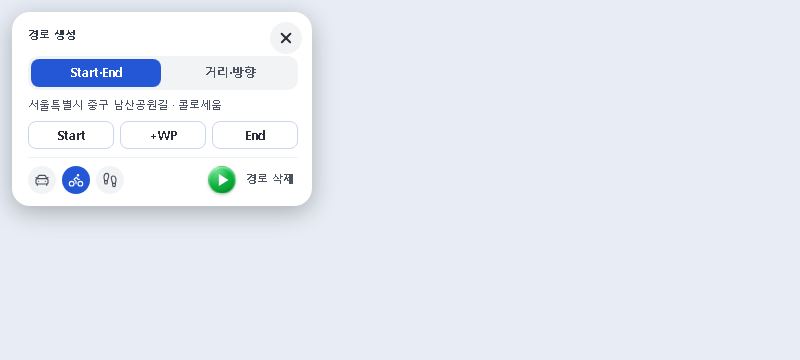
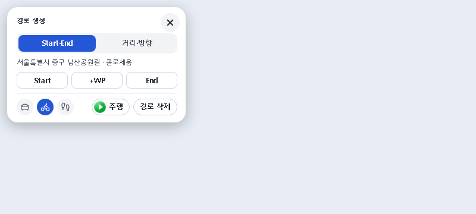
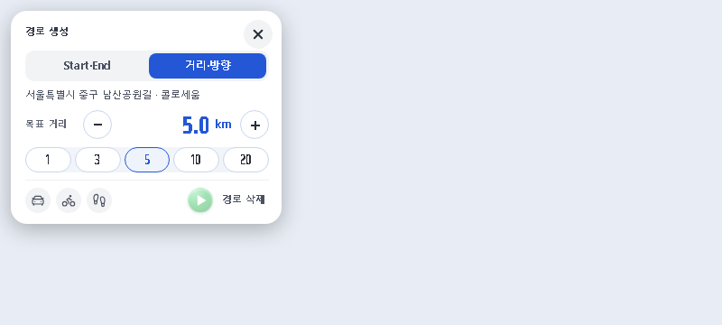
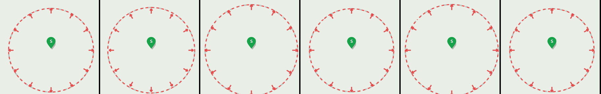

경로창 맨 아래 — 「▶ 주행」 · 「경로 삭제」 알약
녹색 원 아이콘만 있던 재생 버튼과 글자뿐인 「경로 삭제」를 같은 흰 알약으로 맞췄다. Start·End와 거리·방향 두 탭 모두 같다(주행할 수 없을 때는 「주행」이 흐려진다).



거리·방향 — 원과 화살표 펄스
거리를 고르면 원과 바깥 화살표 12개가 함께 커졌다 작아지기를 반복한다. 방향을 누르거나 거리 선택을 바꾸면 멈추고 원래 크기로 돌아온다.

- 미리보기 하네스는 지도 타일 대신 단색 배경, 원 전체가 보이도록 캡처 때만 줌아웃했다.
- 「동작을 줄이기」(reduced motion) 설정에서는 움직이지 않는다.
- 바꾼 것은 원·화살표 크기 애니메이션뿐 — 경로 탐색·좌표·카메라·요청은 그대로다.